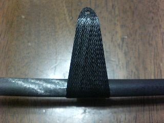

All Moving水平尾翼のマウントです。このマウントは、
Allegroのマウントと同じサイズで同じ作り方で、カーボンクロスを積層してつくるバージョンです。HLGにはちょっと大きめなので、そのうち型を作り直して小さくしようと思っています。
まず、バルサで型を作ります。CADで図面を引いて5mmバルサに貼り付けて切り出したものを6枚張り合わせて、整形します。接着する前にシャフト用の溝を切っておくと、垂直の出たシャフト穴を作ることができます。整形したら、セロテープを貼って表面仕上げとしています。本来は樹脂を塗って仕上げるのでしょうが、めんどくさいので。
念のため、型を離型します。軸受穴用の0.6mmピアノ線をシャフト穴に通します。後でバキュームをかけるので、飛び出し量は最小限にします。2mmくらいです。
カーボンを積層します。112g/m^2のカーボンクロスを２層にして、間に３Ｋのロービングを補強に仕込みます。
クロスは、バイアス方向にできるだけ引き伸ばして使います。樹脂を塗布して、型に載せるときにさらに引っ張って、シャフトに引っ掛けるように固定します。ロービングはぐるっと一回り＋たすきがけに一回りです。重ねたら、シャフトのところにバルサをセロテープで巻いたものを挿して押さえにします。上からビニール袋のビニールをかけて、ブリーサーを敷いた袋に入れ真空引きします。
樹脂が固まったら取り出して、トリミングします。1個目はグラスが3層で少し幅広だったので、1g。2個目は2層にしたので、0.7gです。
| |
|
|
| バギング中 | 型と、はずした直後。 | 整形して出来上がったもの |
Vマウントをブームに取り付けます。取り付ける際には、主翼と水平尾翼が並行になるように、胴体に主翼を取り付けVマウントにつけた尾翼が主翼と並行になるように取り付けます。取り付けには、エポキシ接着剤を使用。前後位置は、水平尾翼が垂直尾翼に干渉しないぎりぎり後ろにします。
このあと、リンケージのテフロンチューブを通した後、チューブのガードをエポキシで作り、3Kのケブラーロービングでたすきがけに補強します。これは、ブームがUDであるため、いくら強固に接着してもブーム自体が剥離を起こして外れてしまうのを防ぐ目的があります。
|  |  |
 |
| 取り付けた様子 | 前の方から | 後ろの方から |